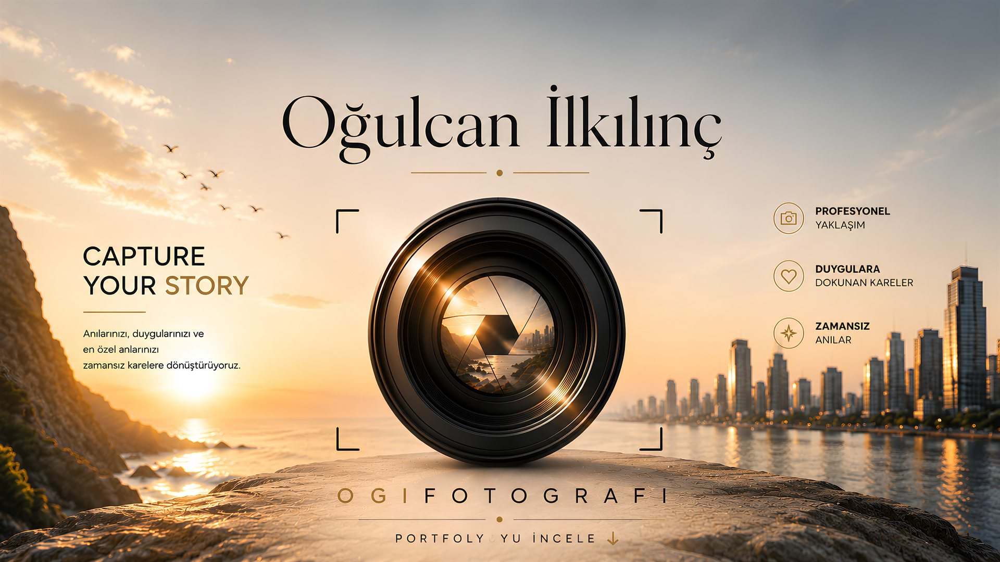
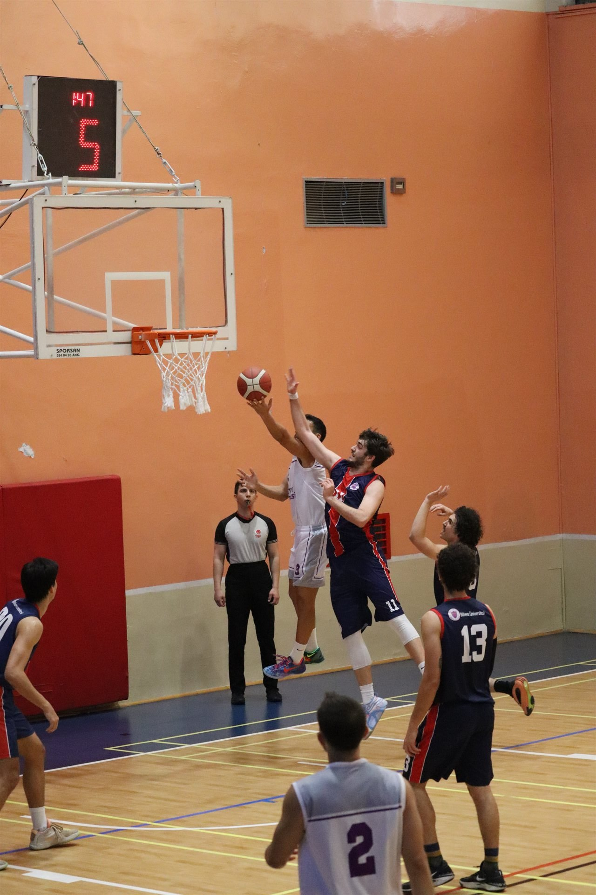
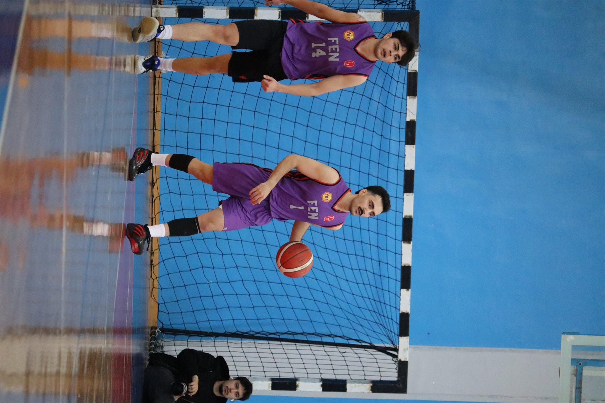
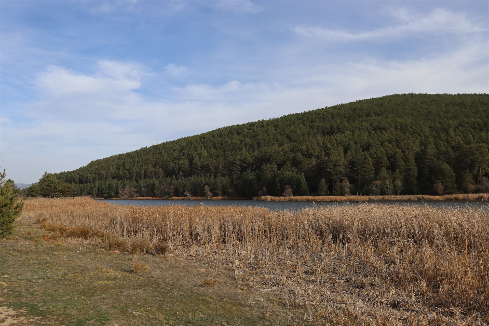
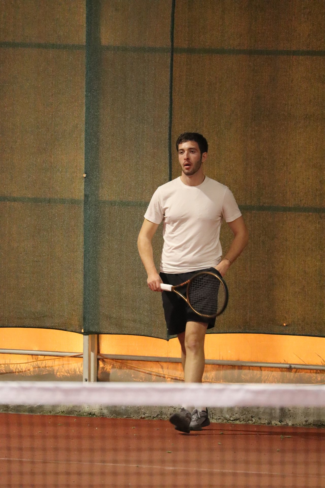
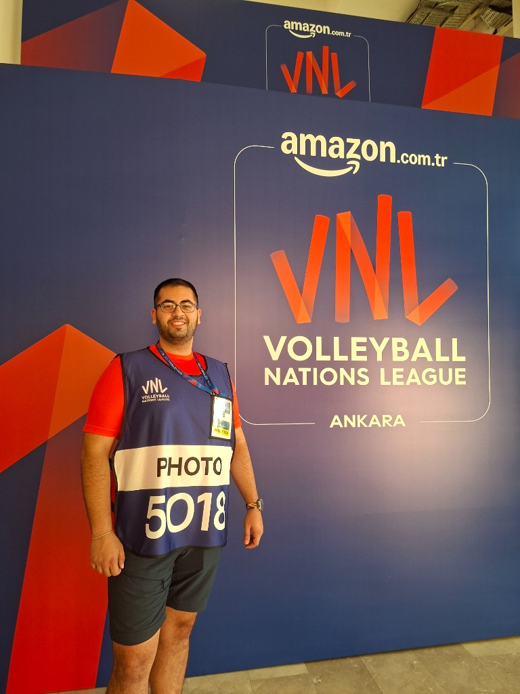

02 — Galeri
Öne Çıkan Kareler
Fotoğraflar yakında eklenecek — aşağıdaki kartlar yer tutucudur.





03 — Hakkımda
Merhaba, ben Oğulcan.
Fotoğrafçılık benim için uzun yıllar tutkuyla sürdürdüğüm bir hobiydi. 2022 yılında ilk profesyonel DSLR kamerama kavuşmamla birlikte bu tutkuyu profesyonel bir serüvene dönüştürdüm. Portreden mimariye, doğadan sokak fotoğrafçılığına kadar pek çok farklı alanda kadrajımı geliştirip tecrübe kazandıktan sonra, hikayemi anlatmak istediğim asıl alanı keşfettim: Spor fotoğrafçılığı.
Saliseden daha kısa süren o geri alınamaz anları ve müsabakanın tüm duygusunu tam zamanında dondurmak en büyük motivasyonum. Ankara merkezli olarak üniversite ve amatör lig müsabakalarından başlayarak adım adım basın akreditasyonu hedeflerime doğru ilerliyorum.
04 — Yol Haritam
Saha kenarına giden yol
Basın akreditasyonu adım adım ilerleyen bir süreç — mevcut durumum ve hedefim aşağıda.
Amatör Spor Müsabakaları
Takım sporlarında ve farklı branşlarda düzenli çekim yaparak portfolyoyu genişletme aşaması.
Üniversite Ligi Maçları
Hacettepe Üniversitesi ve üniversiteler arası müsabakalarda saha kenarı deneyimi.
Bölgesel Lig
Bölgesel düzeydeki müsabakalarda akredite fotoğrafçı olarak yer alma hedefi.
Ulusal Lig Akreditasyonu
Voleybol, Basketbol ve ulusal takım sporları ligleri seviyesinde basın akreditasyonu.
06 — İletişim
Bir proje mi var?
Maç çekimi, etkinlik, portre ya da başka bir iş birliği için benimle iletişime geçebilirsin.